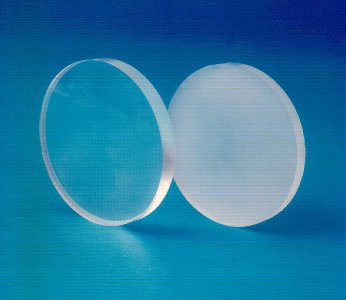
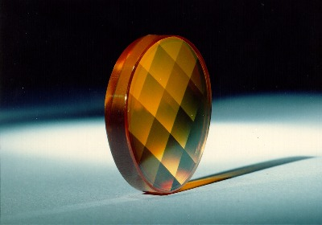

LMP>Linhas de Pesquisa>USIPREC>Usinagem de Ultraprecisão de Cristais Infravermelhos
INTRODUÇÃOA fabricação de elementos ópticos transmissivos no espectro infravermelho através da usinagem com diamante monocristalino abre novas perspectivas para a produção de lentes anesféricas de altíssima qualidade. Com isto é possível melhorar o rendimento de sistemas ópticos que trabalham no comprimento de onda infravermelho, ao mesmo tempo em que podem ser reduzidos os custos de produção destes sistemas. Entretanto, para a aplicação da tecnologia de usinagem de ultraprecisão na produção destes elementos é necessário um profundo conhecimento dos fenômenos que regem a usinagem dúctil de materiais de comportamento frágil, já que os materiais empregados para elementos ópticos transmissivos no espectro infravermelho são de comportamento assim chamado de "duro e frágil". OBJETIVOSEste trabalho visa um maior conhecimento da influência de diferentes variáveis de trabalho sobre a qualidade final da superfície gerada, de forma que a mesma tenha as características ópticas exigidas de elementos para sistemas de altíssima precisão. PROCEDIMENTOSÉ realizada uma profunda pesquisa sistemática da influência do avanço, da profundidade de corte, da geometria da ferramenta e de diversas outras variáveis de processo de importância sobre a qualidade superficial da peça gerada. Para isto, são realizados ensaios de usinagem nos cristais infravermelhos sulfeto de zinco, Cleartran™ e germânio com ferramentas de diamante sob diferentes condições de trabalho e é analisada a rugosidade e qualidade óptica da superfície gerada. Com base nos resultados obtidos, são determinados os parâmetros mais adequados à produção de elementos ópticos em cada um dos materiais ensaiados e analisada a influência que as variáveis de processo têm sobre o resultado final de trabalho.  RESULTADOSOs resultados obtidos mostram que com a usinagem de ultraprecisão é possível obter superfícies com a qualidade necessária para o emprego em sistemas ópticos de altíssimo desempenho também em materiais de comportamento frágil, como por exemplo os cristais infravermelhos. Sob condições de trabalho otimizadas as superfícies geradas são praticamente isentas de trincas e danos superficiais, apresentando rugosidades Ra inferiores a 2 nm, rugosidades P-V menores que 20 nm e desvios de forma submicrométricos.  |
| Contato:
USIPREC Rolf Bertrand Schroeter Prof. Dr. Eng. |
Última Atualização 21.06.2006 |